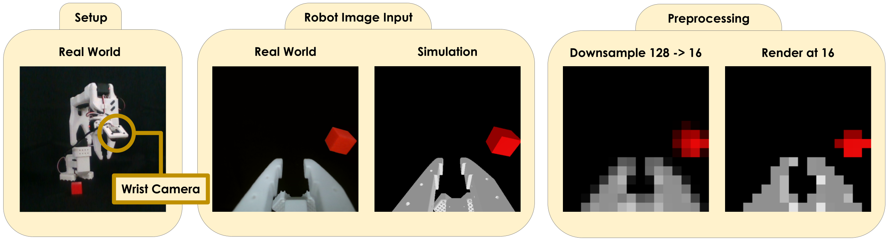
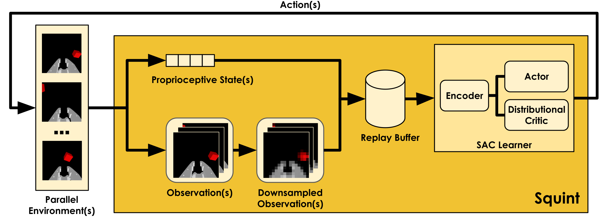
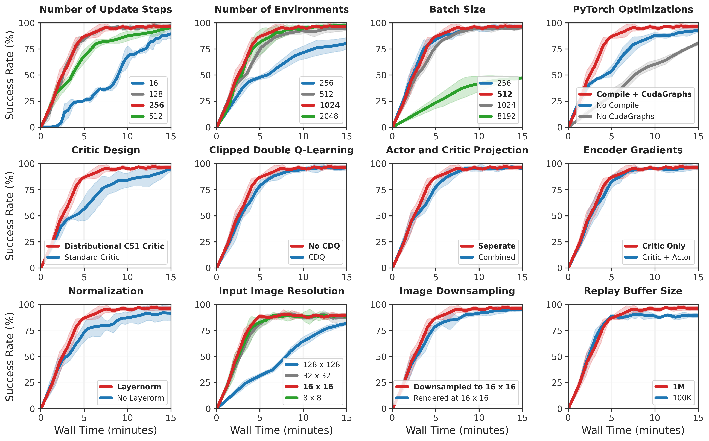
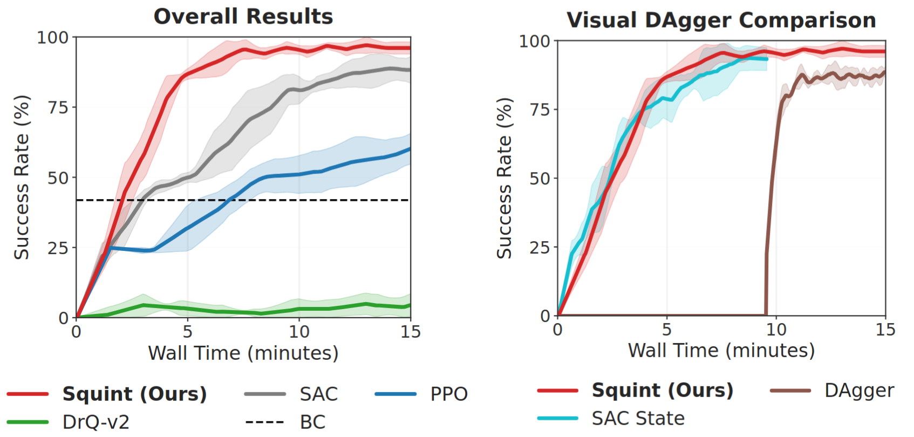

Visual reinforcement learning is appealing for robotics but expensive -- off-policy methods are sample-efficient yet slow; on-policy methods parallelize well but waste samples. Recent work has shown that off-policy methods can train faster than on-policy methods in wall-clock time for state-based control. Extending this to vision remains challenging, where high-dimensional input images complicate training dynamics and introduce substantial storage and encoding overhead. To address these challenges, we introduce Squint, a visual Soft Actor Critic method that achieves faster wall-clock training than prior visual off-policy and on-policy methods. Squint achieves this via parallel simulation, a distributional critic, resolution squinting, layer normalization, a tuned update-to-data ratio, and an optimized implementation. We evaluate on the SO-101 Task Set, a new suite of eight manipulation tasks in ManiSkill3 with heavy domain randomization, and demonstrate sim-to-real transfer to a real SO-101 robot. We train policies for 15 minutes on a single RTX 3090 GPU, with most tasks converging in under 6 minutes.

(Left) We use a single wrist camera, our real world setup is displayed on the left. (Middle) The robot policy input in the real world and simulation is shown in the middle. (Right) On the right, we show the visual difference between downsampling from a higher resolution, vs rendering at the low resolution directly. We refer to downsampling from a higher resolution as squinting.


@misc{almuzairee2026squint,
???
}